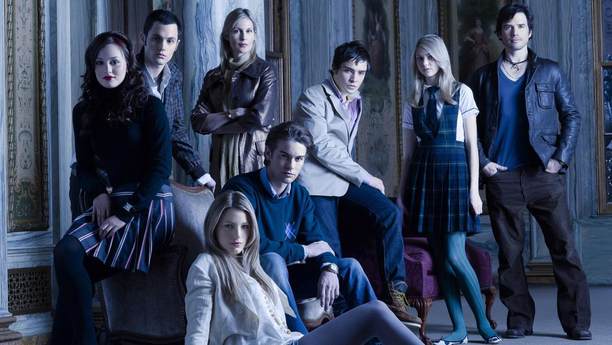

-

SEGUNDA TEMPORADA:2008-2009
-
CUARTA TEMPORADA:2010-2011
Compuesta por 25 episodios, la segunda temporada inició el 1 de septiembre de 2008 y finalizó el 25 de mayo de 2009. Después de haber roto, Serena y Dan intentan llevarse bien, aunque la atracción sexual que existe entre ambos es inevitable, después de haber intentado estar juntos su relación no funciona así que deciden terminar. Blair y Chuck intentan negar lo que sienten el uno por el otro y ninguno se atreve a decir "te amo", hasta que muere el padre de Chuck y entonces Blair cree que es el momento correcto para declararse. En cuanto a Nate y Vanessa, ahora están de novios después de que Nate pasara por una atracción por Jenny y por una turbulenta relación con la madrastra de Lord Marcus. Se descubre el secreto de Lily, que no le dijo a Rufus -el cual está abiertamente enamorado de ella- que antaño tuvieron un hijo y que está dado en adopción. La madre de Lily le cuenta a Rufus antes de que estos viajen en épocas navideñas por lo que Rufus detiene la idea de viajar y no es el único hijo que puede perder el padre de Dan, puesto que su hija Jenny está cada vez más rebelde e inicia una etapa como modista bajo las órdenes de la madre de Blair. Dan hace sus pinitos como escritor, oportunidad que lo lleva a escribir sobre la vida de Chuck y su padre Bart Bass. Por último están el padre de Dan y la madre de Serena, Rufus (Matthew Settle) y Lily (Kelly Rutherford) respectivamente, los cuales fueron pareja en el pasado y ahora vuelven a reencontrarse.
| GOSSIP GIRL | CUARTA TEMPORADA:2010-2011 | |||||||
|---|---|---|---|---|---|---|---|---|
| TRAMA | Compuesta por 22 episodios. Estrenada el 13 de septiembre de 2010, la cuarta temporada de Gossip girl incorporó a dos chicas nuevas: Katie Cassidy como Juliet Sharp, la nueva novia de Nate, y Clemence Poesy como Eva, el nuevo y misterioso affair de Chuck. Además, Taylor Momsen estará ausente durante la primera parte de la temporada por motivos de "creatividad" y debido al calendario de conciertos del Warped Tour. Durante sus vacaciones en París, Serena y Blair mientras tanto, deben tomar una decisión: la primera escoger entre Dan y Nate, mientras que la segunda debe olvidar a Chuck. | |||||||
| INTRODUCCIÓN | Nate, por su parte, se ha pasado el verano de cama en cama, pero alguien parece haber conseguido cambiarle de opinión: la misteriosa Juliet (Katie Cassidy), cuyos objetivos no están muy claros y todo parece indicar que su propósito es destruir a Serena. | Chuck, que fue dado por muerto, reaparece en la capital francesa con una identidad falsa de la mano de Eva (Clemence Poesy), la guapísima joven que le salvó la vida tras el disparo que recibió y que Chuck se lleva a Nueva York para que viva con él, lo que hace que aparezcan los celos de Blair y haga lo imposible para que Chuck y Eva terminen. | Serena y Nate hartos de las peleas entre Chuck y Blair hacen que firmen un tratado de paz y luego del cumpleaños número 20 de Blair, Chuck rompe el tratado y terminan besándose apasionadamente | |||||
| DESARROLLO | Serena deja de lado a Nate y a Dan y conoce a Collin el cual es profesor de Columbia y empiezan a salir, el cual es primo de Juliet y no tiene idea que su prima quiere destruir junto a su hermano Ben, que está en la cárcel, a Serena. Luego Juliet es descubierta por Nate, Chuck, Blair y Serena de que ésta quiere destruir a Serena. | |||||||
| FINAL DE TEMPORADA | Blair y Dan encuentran a Damien el cual les cuenta la historia de Ben y Serena. Después Juliet va al centro a destruir a Serena pero descubre que no tiene motivos para hacerlo. | Serena y Juliet atan todos los cabos y llegan a la conclusión de que ha sido Lily. Lily replica a su hija que ha sido por su futuro y que no piensa ayudarla a sacar a Ben de la cárcel. A todo esto Nate consigue que su padre salga de la cárcel. | Damien está dispuesto a contarles a Eric y Dan. y esto provoca que Dan y Eric traten de meter de nuevo en prisión a Ben por un crimen que nuevamente el no comete, al ver que Damien solo los estaba utilizando para deshacerse de Ben, estos deciden confesar, y sacan nuevamente a Ben de la cárcel y esto da a que Serena y Ben empiecen una relación. | |||||